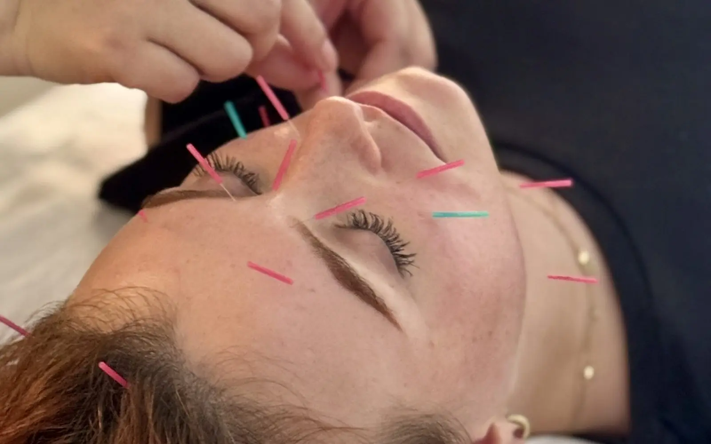

Facial acupuncture · Slovakia
A first facial acupuncture experience
D. wanted a natural alternative to injectables. Facial meridian massage, very fine needles and a gentle micro-current — and a jawline she noticed the difference in.
Read the story →